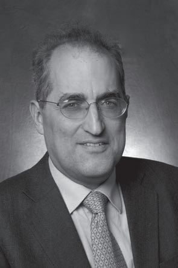
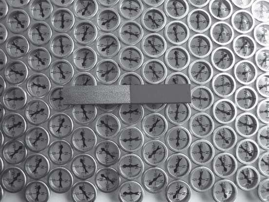

前文中我们已经讨论过，朗兰兹纲领可以贯穿数论、有限域平面上的曲线乃至黎曼曲面，使数学中的多个分支领域发生关联，就连卡茨–穆迪代数表示也被融入其中。由此我们发现，在这些不同的数学领域中存在着相同的模式和现象。虽然它们表现形式不一，但我们总能找到一些相同的特征（例如朗兰兹对偶群），这些共同特征又指向所有数学分支中披着神秘面纱的底层结构（我们也许可以称之为源代码）。从这个意义上看，朗兰兹纲领就是数学领域中的大统一理论。
我们还发现，我们在学校里学习的一些最普通的数学概念（数字、函数、方程式等），有时相互交织，有时披着层层伪装，有时又会被分解得支离破碎；它们并不像看上去的那样简单易懂。现代数学中引入了很多内容深奥、应用广泛的概念与想法，如向量空间、对称群、以质数为模的运算、层等。因此，数学远比我们看到的要丰富多彩，朗兰兹纲领更让我们领略到数字的神秘。到目前为止，我们仍无法窥见数学的全貌。我们就像一群考古学家，摆在我们面前的是一堆古文物碎片，我们需要不断地收集它们，然后努力地完成拼装工作。每一个新证据都会给我们带来新的认识，都是揭示谜底的新工具。但是，每次有新发现，我们又会觉得自己面对的是无穷无尽的变化，很难摸清头绪。
在德林费尔德的帮助下，我在研究卡茨–穆迪代数时结合了朗兰兹纲领，从而为研究这个神秘世界找到了一个切入点。朗兰兹纲领博大精深，涉及数学研究的方方面面，甫一接触我就深深为之着迷。我拼命钻研与朗兰兹纲领有关的所有观点和想法，而且，我的大部分研究工作要么直接以朗兰兹纲领为对象，要么会受到朗兰兹纲领这样或那样的启发。我游走于数学王国的各个大陆之间，学习各种数学文化和语言。
人在旅途中，总会有令人惊奇的发现，我在数学王国的旅行也不例外。如前文所说，我发现了一个惊天秘密：朗兰兹纲领竟然与量子物理学之间存在难以分割的联系，而且，连接它们的纽带是对偶性，这是物理学与数学中都存在的一个属性。
也许，在物理学中寻找对偶性会让人觉得奇怪，但是从一定意义上来说，物理学中的对偶性实际上是我们大家都习以为常的一个概念。我们以电和磁为例，尽管这两个概念似乎相距甚远，但是我们可以通过一个数学理论，即电磁理论，来描述它们。在该理论中，我们可以用隐藏的对偶性来实现电力与磁力的相互转化。（我们在下文将详细讨论这个过程。）20世纪70年代，物理学家们试图将这种对偶性推广至“非可换规范场论”（non-abelian gauge theory）。该理论描述的是原子核的作用力，包括将夸克束缚在质子、中子和其他基本粒子中的“强”作用力，以及导致放射性衰变的“弱”作用力。
所有规范场论的核心内容都是一种李群，叫作规范群。电磁理论从某种意义上说是最简单的规范场论，其规范群是我们已经非常熟悉的循环群（即圆形物体的旋转操作群）。该群是一个可换群，也就是说，在任意两个元素的乘法运算中，调换这两个元素的先后次序对乘积没有影响：a×b=b×a。但是，对于强弱相互作用的电磁理论而言，其对应的规范群是非可换群，即在该规范群中，a×b≠b×a。因此，我们称其为非可换规范场论。
20世纪70年代，物理学家发现非可换规范场论中存在与电磁对偶性类似的特点，不过，其对偶性发生了奇怪的扭曲。研究发现，如果我们有规范群为G的规范场论，那么在其对偶规范场论中，规范群又是另外一个群，即朗兰兹对偶群LG，LG是朗兰兹纲领中的一个重要概念。
我们可以把数学和物理看成两个不同的星球，比如地球和火星。我们发现地球上的大陆之间存在某种关系，通过这种关系，欧洲的每个人都和北美洲的某一个人建立了联系：他们的身高、体重和年龄都相同，但是，他们的性别正好相反（就像李群与其朗兰兹对偶群之间的关系发生了扭曲一样）。然后，某一天，我们遇到了一位从火星来的人。他告诉我们，他们发现在火星的不同大陆之间也存在这种关系，某个大陆上的每个人都能与另一个大陆上的某一个人建立起联系：他们的身高、体重和年龄相同，但是他们的性别正好相反。（有没有人知道火星人是不是也跟我们一样，只有两种性别？）我们听到这番话之后，一下子就惊呆了。看来地球人之间的这种关系与火星人之间的这种关系，两者之间竟然存在某种联系。为什么会这样呢？
同样的道理，朗兰兹对偶群同时出现在数学与物理学中，人们自然会认为，数学领域中的朗兰兹纲领肯定与物理学领域中的电磁对偶性之间存在某种联系。但是，近30年过去了，仍然没有人对此有所发现。
几年来，我不止一次与爱德华·威滕（Edward Witten）探讨过这个问题。威滕是普林斯顿高等研究院的教授，他是公认的当代最杰出的理论物理学家。他尤为擅长将量子物理的复杂工具应用到理论数学的研究之中，做出令人称奇的发现，提出一些人们意想不到的猜想。他的研究鼓舞了好几代数学人，并成为获得菲尔兹奖的第一位物理学家，菲尔兹奖是数学界分量最重的一个奖项。

爱德华·威滕（Edward Witten），当代著名犹太裔美国物理学家、数学家
威滕希望能找到量子对偶性与朗兰兹纲领之间可能存在的某种联系，为此他经常与我讨论这个问题。他来哈佛大学或者麻省理工学院时，常会到我在哈佛大学的办公室，我去普林斯顿大学时也常会去他的办公室。讨论激励着我们不断努力，却一直没有取得任何进展。很明显，我们的研究在某些重要环节还有欠缺，有待取得新的发现。
终于，一件意想不到的事给了我们灵感。
* * *
2003年，我在罗马参加一个会议期间，收到了我的老朋友、同事卡雷·维洛宁（Kari Vilonen）发来的一封电子邮件。卡雷是芬兰人，也是一位交游甚广的数学家。我刚到哈佛大学时，他和他的未婚妻玛蒂娜带我去波士顿的一家体育酒吧，观看红袜队的一场棒球季后赛。可惜的是，红袜队输了，但那确实是一场值得回味的比赛。从此以后，我们成了好朋友，合作完成了几篇关于朗兰兹纲领的论文（合著者还有数学家丹尼斯·盖茨哥利），还有一个关于朗兰兹关系的重要个例的证明。
卡雷（当时在西北大学任教）在邮件中告诉我，DARPA（美国国防部高级研究计划局，the Defense Advanced Research Projects Agency）的人找到了他，希望为朗兰兹纲领的研究提供资金支持。
DARPA是美国国防部下属的一个研究部门。1957年，苏联发射了第一颗人造地球卫星，随后美国国防部便成立了该部门，其任务是推动美国取得科技进步。
我登录DARPA网站，读到了下面这段文字：
为了完成自己的使命，我们将在不同领域发掘各种人才，鼓励他们采用各门学科的研究方法，通过基础研究实现科学知识方面的突破。同时，通过应用研究研发各种创新型技术，解决当下的实际问题。DARPA的科学研究工作将涵盖各个方面，包括实验室工作和所有知识的验证工作……DARPA作为美国国防部创新工作的主引擎，承担的项目应具备历时短、创新效果持久的特点。
多年来，DARPA资助了大量与应用数学和计算机科学相关的研究项目，例如，该机构负责设计了ARPANET网络（因特网的前身）。不过，据我所知，该机构以前从未资助过理论数学研究项目，那么这一次他们为什么要支持朗兰兹纲领的研究呢？
朗兰兹纲领研究似乎属于抽象的纯理论研究，不会产生任何形式的直接应用价值。但是，我们必须清楚，基础性科学研究是所有技术进步的基础。数学与物理领域中的一些看似十分抽象、深奥的发现，常常会带来各种创新，并在日常生活中得到应用。我们以当模为质数时的运算为例。乍一看，这种研究似乎十分抽象，几乎不可能应用于实际生活。英国数学家哈代（G. H. Hardy）提出过一个著名的论断，“很多高等数学的研究工作毫无价值”。但是，现实在他身上开了个玩笑。数论（哈代所从事的研究领域）中有很多看似深奥的研究成果，现在却得到了广泛的实际应用，如网上银行业务。只要我们在网上购物，就会用到模N算法。因此，我们绝不可以带有偏见地认为，数学上的一个公式或一个想法不大可能应用到实际生活当中。
在历史上，所有伟大的技术突破之所以会发生，通常是因为在这之前——通常是几十年前——理论研究就取得了突破。因此，如果我们缺乏对基础性科学研究的支持，技术就会裹足不前，我们的潜能也会受到限制。
基础性科学研究还有另一层重要意义。我们的社会在很大程度上受到科学研究与创新的影响，因此，基础性科学研究是我们社会文化的重要组成部分，也是人们幸福安康的重要保证。1969年，在费米国家实验室发明了当时最大型的粒子加速器后，时任实验室主任的罗伯特·威尔逊（Robert Wilson）在向美国国会原子能联合委员会（Congressional Joint Committee on Atomic Energy）汇报时，有人问及这台耗资几百万美元的机器能否在国家安全方面发挥积极作用，威尔逊回答道：
我们必须从长远的角度和技术发展的角度看待这个问题。否则，这个问题就如同问我们是不是优秀的画家、杰出的雕刻家或伟大的诗人一样。这些职业在我们国家都受到尊敬，这些人都有拳拳爱国之心。与之相似，这些新知识也与荣誉和国家有关，但它不会对加强国防建设起到直接作用，而会使我们这个国家更加富强，让我们在国防上的投入更有意义。
2001~2009年负责领导DARPA的安东尼·泰瑟（Anthony Tether）认为，基础性科学研究非常重要，他要求该机构的项目主管们在理论数学领域甄选出一个好的项目并予以资助。项目主管道格·科克伦（Doug Cochran）积极地响应了泰瑟的号召，他找到NSF（美国国家科学基金会）的一位朋友本·曼恩（Ben Mann）。曼恩是拓扑学方面的专家，但他那时已经不再从事学术研究了，而是来到华盛顿担任NSF数学科学部的项目主任。
当道格请他推荐一个理论数学领域中值得资助的项目时，曼恩想到了朗兰兹纲领。尽管这不是他的研究方向，但他从NSF收到的朗兰兹纲领研究资助提案中看出该领域具有重要的研究价值。这些项目本身，以及它们所涉及的理论对多个数学分支领域的影响力，给他留下了深刻印象。
因此，曼恩建议DARPA为朗兰兹纲领的研究提供资助。于是，道格就联系了卡雷、另外两名数学家和我，请我们提交一份方案，再由道格呈送给DARPA的主任。如果主任批准了该方案，我们预计将会收到几百万美元的资金支持，投入朗弗兰兹纲领研究。
坦率地说，我们一开始的时候还有些犹豫。这毕竟是一片少有人触及的未知领域，据我们了解，还没有哪位数学家接受过数目如此庞大的资助。通常，数学家们会接受NSF的小额个人资助，如小额的差旅费、研究生科研资助以及一些暑期资助。如果我们接受NSF的这项资助计划，我们就必须联合几十位数学家，使其在一个广博的研究领域中合作开展研究。由于资助金额十分巨大，我们将受到公众的严格监督，可能还会遭到同事的怀疑与妒忌。如果研究项目无法取得明显的进展，我们就会遭到嘲笑，而且DARPA有可能因为这次失败，从此拒绝资助理论数学研究项目，随后导致其他有价值的项目得不到资助。
尽管我们内心忐忑不安，但我们还是希望能对朗兰兹纲领的研究产生一些影响。单是一想到人们一向对数学研究的资助计划表现得极其小心谨慎，现在却愿意投入大笔资金，为一个前景看好的研究领域提供资助，我们就觉得这项计划有巨大的吸引力，情不自禁地感到非常兴奋。因此，我们根本没有办法拒绝这个诱惑。
接下来需要解决的问题，就是确定研究项目的主要内容。我们已经知道，朗兰兹纲领涉及多个方面的内容，与数学的多个分支领域有关。这样一个宽泛的研究主题，就算写出好几个研究方案也不是一件难事。因此，我们必须认真选择。经过一番斟酌，我们决定重点研究朗兰兹纲领最神秘的方面，即朗兰兹纲领与量子物理对偶性之间是否有可能存在某种联系。
一周后，道格把我们的方案提交给DARPA的主任。DARPA的主任同意为这个为期三年的研究项目提供数百万美元的资金支持，据我们所知，这是迄今为止理论数学研究获得的最高额度的资助。很显然，大家对我们的期待非常高，我们在兴奋不已的同时，也感到了些许压力。
值得庆幸的是，本·曼恩从NSF调到DARPA担任项目主管，并负责我们的这个项目。在与曼恩有所接触后，我发现他非常适合这份工作。他富有远见，敢于承担高风险、高回报的项目，而且知人善任。他的工作热情很高，对同事有很强的感染力。由曼恩来担任这个项目的主管，我们的运气实在是太好了。的确，如果没有他的指导与支持，我们肯定无法取得现在这些成果。
* * *
在申请资助的事尘埃落定后，我立即给爱德华·威滕发了一封电子邮件。在邮件中，我向他介绍了这个项目的情况，并问他是否有兴趣参与。威滕在物理学界与数学界都享有崇高的地位，我们必须邀请他加入进来。遗憾的是，威滕的第一反应是不参与。他首先向我们表示祝贺，然后告诉我们他的手头还有很多其他项目，因此无法加入我们的研究项目。
不过，幸运女神再次眷顾了我们：物理学家彼得·戈达德（Peter Goddard）马上要到普林斯顿大学高等研究院担任主任。戈达德发现了非可换规范场论中的电磁对偶性，他当时正在研究与卡茨–穆迪代数表示理论相关的一些内容。因为研究领域相近，我在许多学术会议上都碰到了戈达德。
我给彼得发了一封电子邮件，向他介绍了这个项目。我请他在普林斯顿大学高等研究院组织一次会议，召集数学家与物理学家一起讨论朗兰兹纲领与物理学的对偶性，以寻找这两个领域的共同点。
戈尔德对此的反应非常积极，他全力支持我的想法。
普林斯顿大学高等研究院是举办这种会议的理想场所。该研究院成立于1930年，是一个独立的研究中心，涌现出了包括爱因斯坦（他人生中的最后20年就是在这个研究院度过的）、安德烈·韦伊、约翰·冯·诺尔曼（John Von Neumann）、库尔特·哥德尔（Kurt Gödel）等人在内的一大批卓越的科学家。其现有的科研队伍也同样强大，有罗伯特·朗兰兹和爱德华·威滕，还有两名物理学家内森·塞伯格（Nathan Seiberg）和胡安·马尔达西那（Juan Maldacena）（他们的研究领域与量子物理密切相关），以及几名数学家，如皮埃尔·德利涅和罗伯特·麦克弗森（Robert MacPherson）（他们的研究内容与朗兰兹纲领有关）等。
我和戈尔德通过电子邮件沟通，制订了在2003年12月初召开探究性会议的计划。我、本·曼恩和卡雷·维洛宁将奔赴普林斯顿大学参加这次会议，戈尔德也答应出席。我们还邀请了威滕、塞伯格和麦克弗森。普林斯顿大学的一位数学家，与我和卡雷共同负责该项目管理工作的马克·戈瑞斯基（Mark Goresky），也将出席这次会议。此外，我们还邀请了朗兰兹、马尔达西那和德利涅，但因为他们身在外地，无法参加。
这次会议计划于那天上午11点在该研究院自助餐厅隔壁的会议室举行。我、曼恩和卡雷提前15分钟到达会场，当时会场里空无一人。我一边焦急地踱步，一边想：“威滕会来吗？”在所有被邀请的人中，只有他没有确定是否会出席。
在会议只差5分钟就要开始的时候，门开了，威滕走了进来！这一刻我便知道这次会议肯定会取得不错的结果。
几分钟后，其他人也都到了。我们围着一张大桌子坐了下来，一番寒暄之后，大家安静下来。
“感谢各位出席这次会议，”我说道，“我们已经知道，朗兰兹纲领与电磁对偶性之间存在某些共同点。但是，尽管我们付出了许多努力，但我们仍然无法真正了解其中的奥秘。我认为，现在已经到了揭晓谜底的时候了，因为DARPA慷慨解囊，为这项研究提供了充足的资金支持。”
在座的人纷纷点头。彼得·戈尔德问道：“我们该怎么做呢？你有什么提议吗？”
这次会议之前，我和卡雷、曼恩已经设想过大家可能会问到的各种问题，因此我胸有成竹地答道：
“我建议在这里举行一次会议，邀请相关领域的物理学家参与，同时组织数学家做报告，介绍朗兰兹纲领的研究现状。然后，我们再讨论朗兰兹纲领与量子物理之间可能存在哪些联系。”
我说完这句话之后，大家的眼睛都看向威滕。他是量子物理领域的泰斗级人物，所以他的意见至关重要。
威滕身材高大，仪表堂堂。他的学术能力很强，有些人甚至有点儿畏惧他。他说话时字斟句酌，逻辑十分严谨，并且经常会停下来，默默地思考。在思考时他会闭上眼睛，低下头。此时，他正在低头思考。
我们耐心地等着，等待的时间虽然不到一分钟，我却觉得十分漫长。终于，威滕开口了：“这个建议好像还不错。那么，你建议我们什么时候开这个会呢？”
我和曼恩、卡雷情不自禁地交换了一下眼神。有威滕参加，这就是我们取得的巨大成功之一。
经过简短的讨论，我们确定了会议召开的时间：2004年3月8日至10日。接着，有人又问到嘉宾与发言人的人选问题。我们说了几个名字，大家一致同意通过电子邮件确定最后名单，再发邀请函。至此，会议结束，整个过程不超过15分钟。
不言而喻，我和曼恩、卡雷都非常高兴。威滕答应组织这次会议（这当然有助于提升会议的号召力），并承诺将积极参与。据我们分析，朗兰兹本人以及研究院里对这个课题感兴趣的其他物理学家与数学家也可能会参与其中。我们成功地实现了第一个目标。
在随后的几天里，我们确定了参会者的最终名单。一周后，我们发出了邀请函，它的内容是这样的：
我们诚挚地邀请您出席一个有关朗兰兹纲领与物理学的非正式研讨会。该研讨会将于2004年3月8日至10日在普林斯顿大学高等研究院举行，目的是向各位物理学家介绍几何朗兰兹纲领研究在近期取得的进展，并探讨该研究与量子场论之间可能存在的联系。我们将会安排几位数学家做导论性报告，并安排大量时间展开非正式讨论。本次研讨会获得了DARPA的资金支持。
这样的会议通常会有50至100人参加，流程为发言人做报告，其他人认真地听报告，报告结束后会有几个人提问，会后还会有人与发言人做进一步接触。但是，我们在设计本次会议时却另辟蹊径，我们不想沿用惯常模式，而是期望能举办一次效率更高的自由讨论式会议。因此，我们决定缩小会议的规模，把参会人数限制在20人左右。我们认为这样的安排有助于参会者之间的积极交流，使他们在交谈时不受拘束。
2003年11月，我们在芝加哥大学举行的一次会议采用的就是这种模式。应邀参加的数学家不多，包括德林费尔德和贝林森（他们两位几年前被芝加哥大学聘为教授）。那次会议非常成功，从而证明了这种会议模式是切实可行的。
我们还确定了发言人选，有卡雷、马克·戈瑞斯基、我，以及我带过的博士生戴维·本–兹维（David Ben-Zvi，当时在得克萨斯大学任教）。我们把材料分为4个部分，每人主讲其中的一个部分。我们在做报告时，需要向参会的物理学家们介绍朗兰兹纲领的主要内容。由于他们对这个领域并不熟悉，因此这项任务的难度并不小。
* * *
在准备会议的过程中，我希望能进一步了解电磁对偶性。我们对电力与磁力都比较熟悉，由于电力的作用，带有相同或相反电荷的带电物体会相互排斥或吸引。例如，电子带有负电荷，质子带有正电荷（电量为正值），正是由于两者之间存在吸引力，电子才会围绕原子核旋转。电力会生成电场，我们都见过闪电出现时的电场作用，闪电就是潮湿的热气团在电场中运动引起的。
照片来源：雪恩·李尔（Shane Lear），NOAA照片图书馆
形成磁力作用的原因与电场作用有所不同。磁力是磁体或者运动的带电粒子产生的作用力。磁体有北极和南极两个磁极，我们把两个磁体放到一起，如果相反的磁极并排，它们就会相互吸引，反之则会相互排斥。地球是一个巨大的磁体，我们在使用指南针时就是利用了地球的磁力作用。磁体会产生磁场，下图清楚地显示了磁场的特点。

照片来源：德纳·梅森（Dayna Mason）
19世纪70年代，英国物理学家詹姆斯·克拉克·麦克斯韦（James Clerk Maxwell）借助数学理论完美地展现了电磁场的特点，他用来描述电磁场的那组微分方程被冠以他的名字。令人意想不到的是，这些方程式其实非常简单：一共只有4个方程式，而且形式上特别对称。研究发现，如果我们在真空（即没有任何物质存在）环境下考虑该理论，将电场与磁场互换，这组方程将不会发生改变。换言之，电场与磁场的互换是麦克斯韦方程式的一个对称操作，叫作电磁对偶性。也就是说，电场与磁场之间的关系具有对称性，两者的相互作用完全相同。
麦克斯韦方程式描述的是经典的电磁学理论，即在距离较大、能量较弱时该理论成立。但是，如果距离很小、能量很强，描述电场与磁场的特点时就需要使用量子电磁理论。在量子理论中，电场与磁场的携带者为基本粒子——光子，光子会与其他粒子发生相互作用。这套理论叫作量子场论。
为了避免混淆，我需要强调一个问题。术语“量子场论”有两个不同的含义：第一，它指的是用于描述基本粒子运动特点及其相互作用的一般性数学语言；第二，它是指表现基本粒子运动特点的具体模型，例如，量子电磁理论就是这种定义下的量子场论。我在使用该术语时大多使用的是它的第二个定义。
在这种理论（或模型）中，有些粒子（如电子和夸克）是构成物质的基本单位，而有些粒子（如光子）则是力的作用方式。每种粒子都有不同的特点，有的是我们熟悉的特点，如有质量和带电荷，而有的特点我们并不熟悉，如“旋转”。量子场论就是把这些特点组合到一起的配方。
事实上，“配方”（recipe）这个词可以产生具有启示作用的类比。若把量子场论类比成烹饪方法，那么，我们在烹饪时使用的各种食材就代表各种粒子，把各种食材混合到一起的做法就像粒子间的相互作用。
我们以俄式罗宋汤的做法为例。在我的家乡，人们一年四季都爱喝这种汤，我母亲就是做罗宋汤的高手。（这是不容置疑的！）罗宋汤的图片如下（照片由我父亲拍摄）：
当然，我母亲做罗宋汤的方法，我是不会告诉你们的。不过，我在网上找到了另外一种配方：
清汤（牛肉或蔬菜汤）8杯
带骨牛腿肉1磅
大洋葱1只
去皮大甜菜根4个
去皮胡萝卜4个
去皮黄褐色大土豆1个
卷心菜丝2杯
新鲜莳萝碎3/4杯
红酒醋3茶匙
酸奶油1杯
盐胡椒粉
如果我们把这些食材类比成量子场论中的粒子，那么，在这种假设下，对偶性又是什么呢？当然是指在总量保持不变的前提下我们可以替换某些食材（“粒子”）。
这种对偶性表现为下列食材之间可相互替换：
甜菜根→胡萝卜
胡萝卜→甜菜根
洋葱→土豆
土豆→洋葱
盐→胡椒粉
胡椒粉→盐
而且，其他食材在这种对偶性的作用下也保持不变，包括：
清汤→清汤
牛腿→牛腿
……
由于可替换食材的数量彼此相等，因此整个配方并没有发生变化。这就是对偶性。
不过，如果我们让甜菜根和土豆相互替换，配方就会发生变化：在新配方中将会有4个土豆和1个甜菜根。我没有喝过这种配方的罗宋汤，但我相信这样的罗宋汤不会是一道美味。
从这个例子中我们可以看出，烹饪配方中的对称性并不多见，但是从对偶性这个角度我们也能对这道菜有所了解。我们在做罗宋汤时，甜菜根与胡萝卜可以互换，而做出来的汤不受影响，这说明罗宋汤中的甜菜根与胡萝卜的量之间达到了某种平衡。
我们继续讨论量子电磁理论。我们说该理论具有对偶性，意思是，如果我们替换其中的粒子，不会导致整体的性质发生变化。在电磁对偶性的作用下，我们可以把所有的“带电体”变成“带磁体”，或者把所有的“带磁体”变成“带电体”。例如，电子（就像罗宋汤中的甜菜根）携带电荷，因此可以将其替换成携带磁荷的粒子（就像罗宋汤中的胡萝卜）。
这种粒子与我们日常生活的经验相矛盾：磁体总是有两极，而且不可分割！如果把一个磁体分成两个部分，每个部分仍然有两个磁极。
但是，物理学家推测携带磁荷的基本粒子是存在的，这种粒子叫作磁单极子。第一个提出这种猜想的物理学家，是量子物理学的奠基人之一保罗·迪拉克（Paul Dirac）。1931年，保罗指出，如果我们在磁单极子所在的位置（数学家称之为磁场的“奇点”）对磁场进行某个有趣的操作，该磁单极子将携带磁荷。
遗憾的是，人们在实验中并没有发现磁单极子，因此我们无法确定自然界中是否真的存在磁单极子。如果不存在，那么就量子层面而言，自然界中并不存在严格的电磁对偶性。
自然界是否存在磁单极子的问题至今悬而未决。不过，我们可以尝试构建一个量子场论，使之与自然界的状态非常接近，并存在电磁对偶性。我们继续以烹饪做类比，在“烹饪”时，我们可以尝试具有对偶性的新理论，比如，我们可以增减已知配方中的“食材”，改变食材的品种及用量等。这种“实验性食谱”可能会产生不同的结果，我们也不一定会“食用”这些根据想象做出来的菜肴。但是，无论其味道如何，通过梦想厨房研究这些新菜式，我们总能有所收获——这些实验有助于我们找到烹制美味菜肴（即描述宇宙特点的模型）的方法。
几十年来，量子物理学正是采用这种“模型构建”的实验，取得了一个又一个进展（这与烹饪技术的发展颇为相似）。在构建这些模型时，我们采用的一个有效指导原则就是对称性。模型的对称性越明显，越易于分析。
在这里，我们要注意一个重要事实。自然界中存在两种基本粒子，即费米子和波色子，前者是构成物质的基本粒子（电子、夸克等），后者是携带各种作用力的粒子（光子等），人们利用日内瓦大型强子对撞机发现的神秘的希格斯介子就是一种波色子。
这两种粒子从本质上讲存在区别：两个费米子不能同时处于相同的状态，但任意数目的波色子却可以同时处于相同的状态。由于这两种粒子的特性具有天壤之别，因此在很长一段时间里，物理学家都认为量子场论的任何对称性都必须保持费米子区与波色子区各自的独立性——这两种粒子具有天然的相互排斥性。但是，20世纪70年代，有几名物理学家提出了一个看上去非常疯狂的观点：有可能存在某种对称性，使波色子与费米子可以互换。他们把这种对称性称作“超对称性”。
量子力学的创始人之一尼尔斯·波尔（Niels Bohr）对乌夫冈·保利（Wolfgang Pauli）说过一段非常有名的话：“我们都觉得你的这个理论非常疯狂，唯一的不同在于，对这个疯狂理论是否正确的看法不一致。”
尽管我们不知道超对称性在自然界中是否存在，但这个观点却广受欢迎。原因在于，在引入超对称性之后，传统量子场论所面临的很多无法解决的问题迎刃而解。超对称性理论的结构更加别致，亦便于分析。
量子电磁理论不具有超对称性，但却拥有超对称性扩展结构。我们在量子电磁理论中添加包含波色子与费米子在内的各种粒子，由此得到的量子电磁理论就具有超对称性。
而且，物理学家在对具有最强超对称性的电磁理论扩展结构进行研究后发现，其中真的存在电磁对偶性。
我们将上述内容做一个小结：我们不知道某种形式的量子电磁对偶性是否存在于真实世界中，但是我们知道，在量子电磁理论的理想化、具有超对称性的扩展结构中，电磁对偶性是明显存在的。
关于这种对偶性，还有一个重要方面我们尚未论及。电磁量子场论有一个参数——电子携带的电荷，该值为负，因此我们把它记作–e，其中e=1.602×10–19库仑，非常小。具有最强超对称性的电磁理论扩展结构也有一个类似的参数，我们把它记作e。如果我们根据电磁对偶性，将所有带电体替换成带磁体，那么电磁理论中电子的电荷数就不是e，而是e的倒数1/e了。
如果e非常小，1/e就会非常大。因此，如果电磁理论中的电子携带少量电荷（如我们生活的这个世界），那么其对偶电磁理论中的电子就会携带大量电荷。
这个结果非常令人吃惊！我们还是用罗宋汤来做类比。假设e是罗宋汤的温度，那么根据这种对偶性，只要我们把汤配方中的甜菜根与胡萝卜互换，一盆冰冷的罗宋汤立刻便会变得热气腾腾。
事实上，由e变为其倒数1/e，这是电磁对偶性的一个重要内容，具有非常深远的意义。在构建量子场论时，只有该参数取像e这样的极小值，我们才能做到得心应手。我们无法推测在该参数取较大值时，量子电磁理论是否仍然有意义。但是电磁对偶性表明，当该参数取较大值时，该量子电磁理论不仅有意义，而且与它取较小值时没有什么不同。这意味着，无论该参数取什么样的值，我们都可以描述量子电磁理论。因此，人们把电磁对偶性看作量子物理学的“圣杯”。
* * *
我们接下来需要考虑的问题是，除了电磁理论及其超对称性扩展结构以外，其他量子场论中是否存在电磁对偶性。
除了电力和磁力以外，自然界中还存在另外三种已知的作用力：万有引力（这是一种我们都非常熟悉，也应该感谢的作用力）和两种核力（名称比较通俗，分别为强核力和弱核力）。强核力将夸克束缚在质子、中子等基本粒子之中，弱核力则会导致原子和基本粒子变形，如原子的β衰变（电子或中子发射）和氢的聚变（恒星的能量来源）。
这些作用力似乎各不相同，但研究发现，阐述电磁力、弱核力和强核力等的相关理论都属于规范场论。1954年，物理学家杨振宁与罗伯特·米尔斯（Robert Mills）在其合作完成的论文中开创性地提出了规范场论，因此该理论又叫作杨–米尔斯规范场论。我在本章开头告诉过大家，规范场论有一个对称群，即规范群，它是一个李群。电磁理论的规范群是循环群，它也叫作SO(2)或U(1)群。这是最简单的李群，它还是可换群。我们知道，很多李群都是非可换群，如球体旋转群SO(3)。杨振宁与米尔斯的想法是利用非可换群替换循环群，以推广电磁理论。研究发现，包含非可换规范群的规范场论，可以准确地描述弱核力与强核力。
弱核力规范场论的规范群叫作SU(2)群，是SO(3)群的朗兰兹对偶群，比SO(3)群大一倍。强核力规范场论的规范群叫作SU(3)群。
因此，自然界一共有4种基本的作用力（我们把电力和磁力看作电磁力的组成部分），规范场论给出了其中三种作用力的通用描述形式。此外，人们发现，这三个规范场论并非彼此独立，而是以三个组成部分构成了一个整体——“标准模型”（Standard Model）。在标准模型中，上述作用力是三个彼此独立的部分，因此标准模型是一种“统一理论”，这是爱因斯坦在其人生的最后30年苦苦求索却未能实现的目标（尽管当时的人只知道电磁力和万有引力这两种作用力）。
我们在这里长篇累牍地强调数学中统一理论的重要意义。例如，朗兰兹纲领利用类似的术语描述数学不同分支领域的多种现象，因此它是一种统一理论。在物理学领域，利用最初形成的少量原理构建统一理论也极具吸引力，因为我们希望尽可能全面地了解宇宙运行的规律，也希望终极理论（如果真的存在）简单明了、形式别致。
但是，简单明了、形式别致未必意味着易于理解。例如，麦克斯韦方程式深奥难懂，需要花费很多时间和精力才能理解其含义。但是，这些方程式的结构非常简单，以最经济的方式揭开了电磁力的神秘面纱。而且，这些方程式的表现形式也非常别致优雅。爱因斯坦的万有引力方程与杨振宁、米尔斯提出的非可换规范场论方程也具有同样的特点。统一理论应该兼收并蓄，包含所有这些内容，就像交响乐把所有乐器的演奏交融到一起，生成优美的乐曲一样。
标准模型使人们朝着这个方向迈出了坚实的一步，其实证工作（包括不久前发现的希格斯波色子）也取得了成功。不过，标准模型仍然不是宇宙的终极理论，原因之一在于它没有把万有引力包含其中。研究表明，万有引力是最难捉摸的作用力。爱因斯坦的广义相对论可以帮助我们较好地理解物体间距离较大时的万有引力作用，但是我们还没有找到经过实验验证的量子理论，可用于描述物体间距离较短时的万有引力作用。而且，即便我们把注意力集中在自然界的其他三种作用力上，仍然有很多问题无法借助标准模型予以解答。此外，标准模型无法解释天文学家观测到的大块物质（被称作“暗物质”），因此，标准模型充其量是终极统一理论的草稿。
我们可以确定的一点是：书写终极统一理论核心内容所使用的必定是数学语言。事实上，在杨振宁与米尔斯提出了非可换规范场论之后，物理学家们惊奇地发现，早在几十年前，数学家在没有参考任何物理知识的情况下，就已经提出了构建这些理论所必需的数学表现形式了。杨振宁在获得诺贝尔奖之前，用下面这番话表达了他的敬畏之心：
这不仅是令人欢欣鼓舞的成功，其背后还蕴藏着更多、更深层次的意义。我们发现，物理世界的架构竟然与深奥的数学概念有着如此密切的联系，而数学界在探讨这些概念时考虑的主要内容竟然只是其逻辑与外在形式之美。还有什么事会比这更神秘莫测、令人敬畏的呢？
有人曾问爱因斯坦：“数学是人类凭空想象出来的事物，为什么它在描述客观现实时却是那么精准呢？”爱因斯坦在回答时也表现出了同样的敬畏之心。杨振宁与米尔斯利用规范场论描述自然界的作用力，而在数学家研究的几何范例中，规范场论同样符合几何学的内在逻辑规律，因此，这些概念在数学领域出现的时间更早一些。这个事实充分地证明了另外一位诺贝尔奖获得者、物理学家尤金·魏格纳（Eugene Wigner）的论断：“在自然科学领域，数学发挥了非比寻常的重要作用。”尽管几百年来，科学家们一直致力于探索这种“作用”究竟是如何发生的，但依然没有答案。数学概念似乎就是一种客观存在，无须借助物理学，也超越了人脑的限制。毫无疑问，数学概念与客观现实及人类意识之间，必然存在某种极为深奥的联系，有待人们进一步探索。（关于这方面的内容，我们将在第18章进行深入讨论。）
为了超越标准模型，我们需要不断发掘新观点和新概念，超对称性就是这样一个概念。关于超对称性是否存在的问题，人们众说纷纭、尚无定论。到目前为止，人们也没有发现它的任何踪迹。实验是理论的终极裁判，在通过实验验证之前，超对称性还只是一种理论猜想，即便这种理论精妙绝伦。不过，即使研究发现超对称性在现实世界中并不存在，它也不失为一种方便有效的数学工具，可以帮助我们构建量子物理学研究的新模型。这些新模型与表现现实世界的物理性质的各种模型之间并不存在天壤之别，而且由于其对称性更强，因此使用起来更为方便。总之，无论超对称性是否存在，我们都可以借助它去研究我们所处的现实世界。
非可换规范场论与电磁理论一样，也有一个最大的超对称性扩展结构。我们在这些非可换规范场论中加入各种粒子，包括波色子和费米子，当其内部达到最大程度的平衡时，就产生了超对称性。于是，我们自然会产生这样的疑问：这些非可换规范场论理论与电磁对偶性之间存在类似的联系吗？
20世纪70年代，物理学家克劳斯·蒙托宁（Claus Montonen）与戴维·奥利弗（David Olive）回答了这个问题。他们两人基于彼得·戈达德（后来担任普林斯顿高等研究院的院长）、基恩·努特斯（Jean Nuyts）和戴维·奥利弗的研究成果，得出了一个令人吃惊的结论：超对称性非可换规范场论中的确存在电磁对偶性，不过这些规范场论不是自对偶，它在这一点上与电磁理论不同。我们在前面讨论过，如果我们把电磁理论中的所有带电体换成带磁体，或者把所有带磁体换成带电体，那么电磁理论保持不变，只不过电子携带的电荷量变成了初始值的倒数。但是，研究发现，如果我们对规范群为G的一般性超对称规范场论进行同样的操作，就会得到一个不同的理论——它仍然是一个规范场论，但是规范群不同（参数也会变成初始值的倒数，与电磁理论中电子电荷量的变化相同）。
那么，这个对偶性规范场论的规范群是什么呢？研究发现，该规范群为LG，即群G的朗兰兹对偶群。
在研究中，戈达德、努特斯和奥利弗通过仔细分析规范群为G的规范场论中的电荷与磁荷，得出了上述结论。电磁理论是规范群为循环群的规范场论，其中的电荷与磁荷均为整数。如果我们互换电荷与磁荷，就是用一个整数集替换另一个整数集，因此，电磁理论保持不变。但是戈达德等人发现，在一般的规范场论中，电荷与磁荷的值是两个不同的集合，我们把它们分别记作Se和Sm。这两个集合可以借助规范群G，用数学方法加以表示（不过，这跟我们现在讨论的内容关系不大）。
研究表明，在电磁对偶性的作用下，Se可以变成Sm，Sm也可以变成Se。现在，我们需要回答的问题是，是否存在另一个群G'，其中的Se就是群G中的Sm，同时，Sm就是群G中的Se（而且这种关系同样适用于由群G和群G'确定的其他数字）。没有明显的证据表明这样的群G'是否存在，但是戈达德等人证明了它的存在，并成功地构建出该群。当时，他们并不知道，朗兰兹在10年前就用差不多的方法构建出群G'，但朗兰兹的动机与他们完全不同。事实上，该群G'就是朗兰兹对偶群LG。
电磁对偶性所产生的群，与数学家在完全不同的环境下发现的朗兰兹对偶群竟然完全一致，其原因何在？这是我们在普林斯顿大学会议上准备着手解决的重要问题。